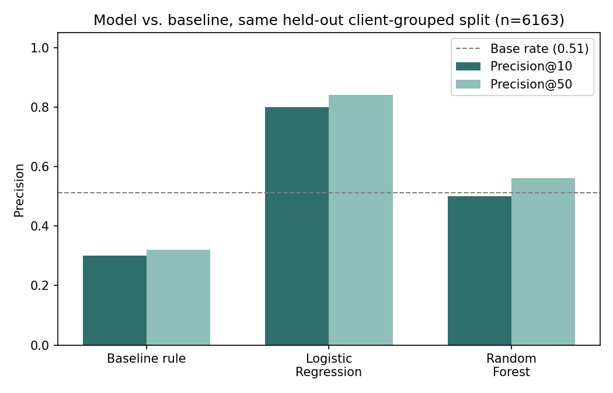
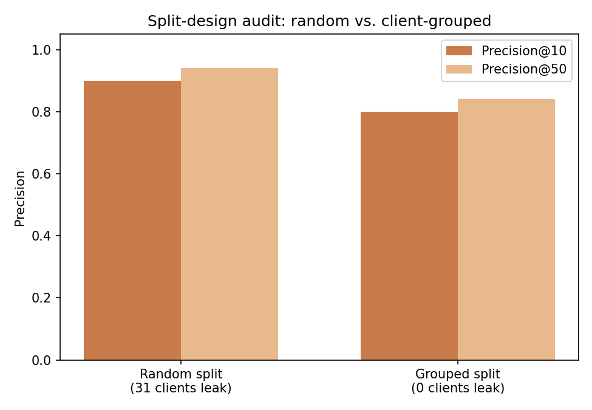
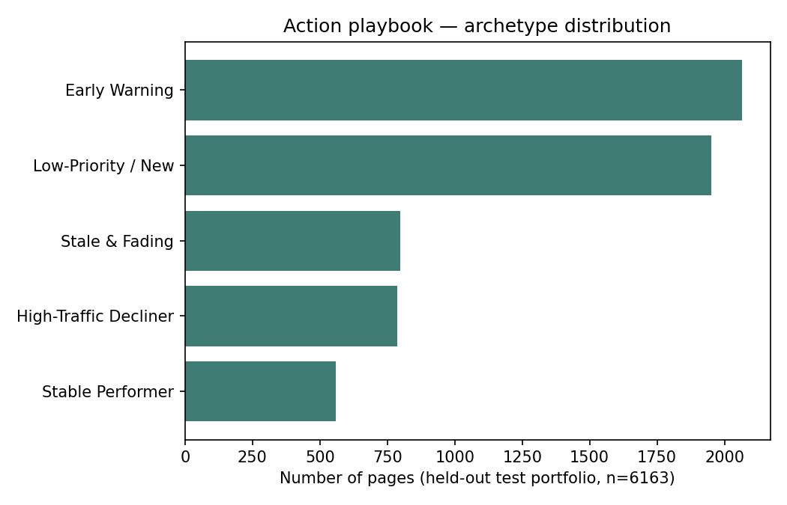
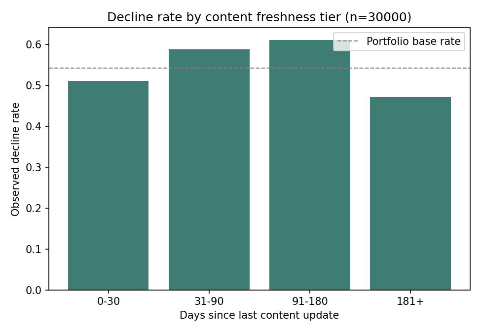

FlyRank AI Machine Learning Internship — Capstone Research Paper
A client-grouped, leakage-checked comparison of a trained ranking model against a hand-written prioritization rule, on FlyRank's pseudonymized content-performance dataset.
Content that ranks well in search quietly decays, and most teams notice too late — the open question is which page, out of thousands, a human should review first. Using FlyRank's pseudonymized starter dataset (30,000 content pages, 32 clients, trailing 90-day metrics), this paper builds a Logistic Regression model to rank pages by decline risk and compares it against a hand-written staleness-and-visibility rule already used in production. Validated on a held-out test portfolio split by client — so no client's pages appear in both training and test data — the model measured a precision@50 of 0.84, against 0.32 for the existing rule and a 0.51 base rate. A parallel audit found that a naive random split would have reported an inflated 0.94, entirely from the model partly memorizing client-specific patterns rather than learning something that transfers. The result is offered as decision-support for prioritizing a content-refresh queue, not as a causal or automated claim about what fixes decline.
FlyRank builds and maintains content across client websites, and it already flags pages today with hand-written rules — a page is tagged for review if it looks stale, or if it looks like a "quick win." These rules are simple, explainable, and run in production. But they run out where the real pattern lives: search position, click-through rate, content age, and traffic consistency interact in ways a single if-statement can't capture.
The decision this paper supports is narrow and concrete: given a portfolio of thousands of pages, which ones should a content strategist look at first this cycle? That is a ranking problem on real, messy production data — exactly the kind of problem where a learned model has room to beat a fixed threshold, provided the comparison is measured honestly.
This paper uses FlyRank's internship starter release: content_refresh_anonymized.csv — 30,000 rows, one row per pseudonymized content item, spanning 32 clients, with metrics aggregated over a trailing 90-day window. FlyRank also hosts a larger ~79-million-row warehouse release covering a longer history across more clients; this paper reports on the starter release only.
Three groups of columns were deliberately excluded from the model, each for a stated reason:
trend_direction, trend_pct) — these define the outcome being predicted; using them as inputs would let the model reconstruct its own answer.impressions_last_30d, clicks_last_30d, sessions_last_30d) — these share the same 30-day window used to build the label. Section 5 shows what happens when one is added back in.No client names, raw search queries, or other identifying detail appear anywhere in this paper or its underlying notebooks; content_id and client_id are pseudonyms used only to group and split the data.
Label. A page is marked declining (is_declining_label = 1) when its trailing-30-day impressions dropped more than 20% against the prior 30 days — an observed change in real traffic, not an opinion-based rule.
Baseline. The comparison point is a hand-written rule already in the spirit of FlyRank's flags: a page is scored for review if it is stale (91+ days since its last update) and still has real visibility (moderate impressions or better). This rule reaches a precision@50 of 0.32 on the held-out test split — the number the trained model needs to beat.
Model. Logistic Regression was compared head-to-head against a Random Forest on the identical split and feature set. Logistic Regression scored higher at every cutoff (Section 5) and was kept — the added complexity of the ensemble model did not earn its place here.
Validation design. The test split is grouped by client_id (80/20, via scikit-learn's GroupShuffleSplit), so no client's pages appear in both training and test. The dataset is a single 90-day snapshot with no timestamp column, so a time-aware split isn't available; client-grouping is the honest substitute, since pages from the same client likely share templates and traffic patterns that a random row split would let the model partly memorize.
All numbers below come from the same held-out, client-grouped test split: 6,163 rows across 7 clients the model never trained on, with a test-set base rate of 0.511.
| Method | Precision@10 | Precision@50 |
|---|---|---|
| Baseline rule (production-style) | 0.300 | 0.320 |
| Logistic Regression (chosen) | 0.800 | 0.840 |
| Random Forest | 0.500 | 0.560 |

Both trained models measured a higher precision@50 than the baseline rule and the base rate on this split; Logistic Regression scored highest at both cutoffs.
Split-design audit. Re-running the identical model under a naive random row-level split, instead of the client-grouped split, changes the picture:
| Split | Base rate | P@10 | P@50 | Client overlap |
|---|---|---|---|---|
| Random (ungrouped) | 0.542 | 0.900 | 0.940 | 31 clients |
| Grouped by client_id (used) | 0.511 | 0.800 | 0.840 | 0 clients |

The 0.10-point gap at precision@50 is itself a finding: a rough measure of how much of the random-split score reflected the model memorizing client-specific quirks rather than learning something that transfers to a brand it hasn't seen.
impressions_last_30d back into the feature set — a column that overlaps the label's own 30-day window — pushed the score to a near-perfect precision@10 and precision@50 of 1.000. That result is the leak signature, not a genuine improvement, and confirms the evaluation harness is sensitive to leakage rather than silently missing it.
Where the model is wrong. Of the top-50 pages the chosen model ranked highest, 8 were false positives, and all 8 sit in the highest visibility tier, averaging roughly 49,900 prior-30-day impressions versus roughly 31,100 for true positives in the same top 50. This is a directional pattern, based on a small 8-row sample, suggesting the model leans on raw traffic volume somewhat more than it should — not a settled fact about its internals.
Applying the validated model to the held-out test portfolio (n=6,163) sorts pages into five archetypes, in priority order:
High-Traffic Decliner — 786 pages (12.8%)
High visibility and high risk score. Priority refresh this quarter: update content, re-check search-intent match, verify technical SEO basics.
Stale & Fading — 799 pages (13.0%)
Old content, high risk, not yet high-traffic. Refresh, or consolidate into a stronger page if traffic is already low.
Early Warning — 2,066 pages (33.5%)
High risk but not yet stale or high-traffic. Add to the next review cycle; not urgent, but worth tracking for two more reporting periods.
Stable Performer — 560 pages (9.1%)
High traffic, low risk. No action needed; light monitoring only.
Low-Priority / New — 1,952 pages (31.7%)
Low traffic, low risk. No action; revisit next quarter.

The underlying decay pattern supporting this queue: pages 91–180 days since their last update show the highest observed decline rate (61.1%), clearly above freshly updated content (0–30 days, 51.1%). One honest caveat is visible in the same chart — pages older than 180 days show a lower decline rate (47.1%), most likely because pages still being tracked that long without being retired are the ones that already stabilized (survivorship bias), not because very old content is safer.

Every number and chart above traces back to notebooks in the project repository, runnable end to end with a fixed random seed (42):
Built on the FlyRank ML Internship dataset — flyrank.ai. Thanks to mentors Irza and Haris for guidance throughout the internship track.